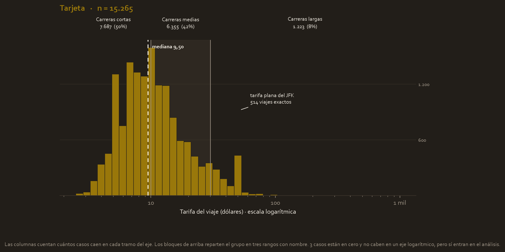
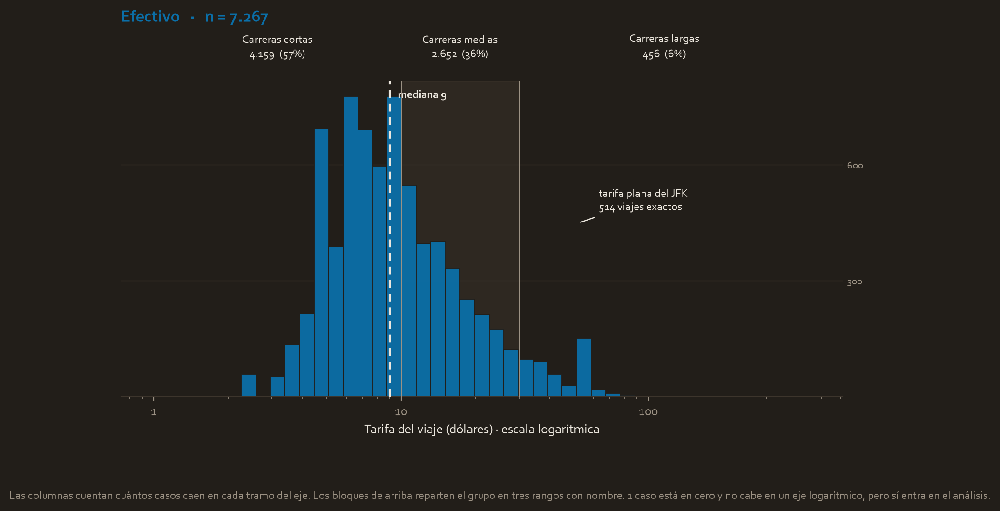
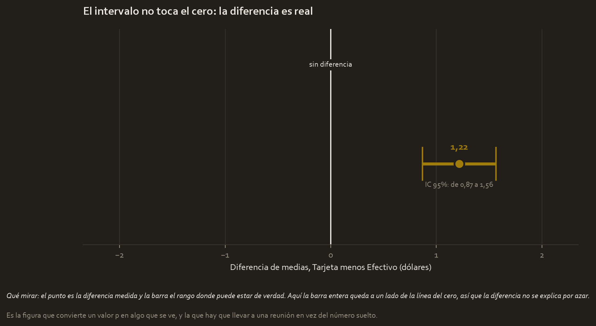

El encargo
Trabajas como analista para Automatidata, una consultora de datos contratada por la Comisión de Taxis y Limusinas de Nueva York (la NYC TLC), el organismo que regula los taxis amarillos de la ciudad.
La gerencia tiene una corazonada sobre los ingresos. Sospecha que la forma de pago cambia lo que acaba pagando el cliente, y quiere saber si conviene empujar el pago con tarjeta. Antes de montar una campaña, alguien tiene que comprobar si esa corazonada se sostiene con los datos de verdad.
La pregunta
¿Los clientes que pagan con tarjeta de crédito dejan una tarifa más alta que los que pagan en efectivo?
La tentación es calcular los dos promedios, ver cuál es mayor y dar el asunto por resuelto. Pero un par de dólares de diferencia en una muestra puede ser puro azar de esa muestra. Para afirmar que el patrón es real hace falta una prueba de hipótesis.
Las hipótesis
Se escriben antes de mirar los resultados, no después:
- Hipótesis nula (H₀). No existe diferencia entre la tarifa media pagada con tarjeta y la pagada en efectivo. Es la postura por defecto, la de "aquí no pasa nada".
- Hipótesis alternativa (Hₐ). Sí existe una diferencia real entre ambas.
El nivel de significancia se fija en α = 0,05, el estándar. Es la cantidad de riesgo que aceptamos de gritar "¡hay diferencia!" cuando en realidad no la había.
Los datos
Viajes de taxi amarillo de Nueva York, año 2017. El archivo trae 22.699 viajes y el análisis trabaja con los 22.532 que tienen forma de pago identificada.
| Grupo | Viajes | Qué es |
|---|---|---|
| Tarjeta de crédito | 15.265 | payment_type = 1 |
| Efectivo | 7.267 | payment_type = 2 |
La variable que se mide es fare_amount, la tarifa del viaje en dólares.
Lo que mostró la exploración
Un panel por grupo, para que cada uno se lea con su propia escala, y luego los dos repartos comparados.

Panel 1. Los pagos con tarjeta
Las columnas cuentan cuántos viajes caen en cada tramo de tarifa, con el eje en escala logarítmica porque las carreras van de unos pocos dólares a cerca de mil.
El reparto en tres rangos dice que la mitad de los viajes con tarjeta son carreras cortas de menos de 10 dólares, un 42 % son medias y un 8 % son largas.
Hay además una columna aislada a la derecha que no encaja con la forma general: son 514 viajes de exactamente 52,00 dólares, la tarifa plana del aeropuerto JFK. Un pico así de estrecho en un histograma casi nunca es azar, casi siempre es una regla de negocio escondida en los datos.

Panel 2. Los pagos en efectivo
La misma forma, y ese parecido es la historia del caso. Pero el reparto cambia un poco: el 57 % de los pagos en efectivo son carreras cortas, frente al 50 % de los de tarjeta.
Como en el otro caso, la escala vertical de cada panel es la suya, porque hay 15.265 viajes con tarjeta y 7.267 en efectivo.
Los dos repartos, uno al lado del otro
| Tramo | Tarjeta | Efectivo |
|---|---|---|
| Carreras cortas (menos de 10 $) | 50,4 % | 57,2 % |
| Carreras medias (10 a 30 $) | 41,6 % | 36,5 % |
| Carreras largas (más de 30 $) | 8,0 % | 6,3 % |
Y aquí aparece, dibujado, el factor de confusión del que habla la sección de limitaciones: el efectivo se concentra en las carreras cortas y la tarjeta en las largas. Como las carreras largas cuestan más, parte de la diferencia de tarifa media podría venir de la distancia y no de la forma de pago. Este análisis no puede separar las dos cosas.

Cómo se lee esta figura
Esta figura no existía en el proyecto original y es la que mejor resume el caso.
El punto marca la diferencia observada, 1,22 dólares. La barra es el intervalo de confianza del 95 %, el rango donde puede estar la diferencia real. La línea vertical es el cero, la posición de "no hay diferencia".
Aquí la barra no toca el cero, así que la diferencia es real. Pero fíjate en la otra mitad del mensaje: el intervalo entero vive entre 0,87 y 1,56 dólares. La diferencia no solo es real, es pequeña y está bien acotada. Esta figura es la que impide vender el hallazgo como algo más grande de lo que es.
La prueba, y por qué esta prueba
Se comparan las medias de dos grupos independientes, así que toca una prueba t de dos muestras. Dentro de esa familia hay que elegir, y la elección se justifica.
Primero se comprueba si las varianzas son iguales
La prueba t clásica, la de Student, asume que ambos grupos tienen la misma dispersión. Eso se verifica con el test de Levene:
Levene: estadístico = 9.6815 p = 1.86e-03
Ese p = 0,00186 es menor que 0,05, así que las varianzas no son iguales. Tiene sentido: ya se veía en los paneles que el grupo de tarjeta llega más lejos hacia las tarifas altas.
Por eso se usa Welch, no Student
Como el supuesto de varianzas iguales no se cumple, se usa la prueba t de Welch (equal_var=False), que no lo exige. Usar Student aquí habría dado una precisión fingida.
¿Y la normalidad, con distribuciones tan sesgadas como las del histograma? Entra el teorema del límite central del módulo 3: con más de 22.000 viajes, la distribución de las medias es aproximadamente normal aunque los viajes individuales no lo sean.
Y luego se comprueba que el resultado no sea un espejismo
El análisis no se queda en una sola prueba. Repite el contraste quitando los atípicos por la regla del IQR, y añade Mann-Whitney U, que compara rangos en vez de medias y no asume ninguna forma de distribución:
| Validación | Resultado | Decisión |
|---|---|---|
| Welch, datos completos | t = 6,8668, p = 6,80e-12 | Rechazar H₀ |
| Welch, sin atípicos (n₁=13.778 / n₂=6.711) | t = 8,4911, p = 2,26e-17 | Rechazar H₀ |
| Mann-Whitney U | U = 60.832.931,5, p = 5,75e-32 | Rechazar H₀ |
Las tres coinciden. La diferencia no es un artefacto de los valores extremos ni de que la distribución no sea normal.
El resultado, traducido
Welch t = 6.8668 p = 6.80e-12 IC 95% de la diferencia = [0.87 , 1.56] dólares Cohen's d = 0.0922
Qué significa cada línea:
- t = 6,87. Las medias están separadas por casi siete unidades de error estándar. A partir de 2 ya se considera una separación notable.
- p = 6,80 × 10⁻¹². La probabilidad de ver una diferencia así de grande **si en realidad no hubiera ninguna**. En decimales es
0,0000000000068. A efectos prácticos, cero. Se rechaza H₀. - Intervalo de confianza 95 % = [0,87 $ , 1,56 $]. La diferencia real está en algún punto de ese rango. No incluye el cero, que es otra forma de ver el mismo resultado.
- Cohen's d = 0,0922. Y aquí llega la parte interesante.
La lección que hace valioso este caso
Un p de doce ceros parece gritar "¡diferencia enorme!". Pero Cohen's d = 0,0922 es un efecto chico: por convención, por debajo de 0,2 se considera casi imperceptible.
¿Cómo pueden ser ciertas las dos cosas a la vez? Porque el valor p depende del tamaño de muestra. Con 22.532 viajes, hasta una diferencia diminuta se vuelve estadísticamente segura. El intervalo de confianza lo confirma: la diferencia real está entre 87 centavos y 1,56 dólares, un rango pequeño y bien acotado, no un salto espectacular.
Dicho en una frase: la diferencia es real y consistente, pero modesta. Confundir "estadísticamente significativo" con "importante" es el error que este caso enseña a no cometer.
Qué se decide con esto
Sí conviene incentivar el pago con tarjeta, pero con expectativas realistas. El cobro electrónico se asocia con tarifas más altas de forma estadísticamente confiable, y a la vez el efecto ronda 1,22 dólares por viaje. Nadie debería prometer un salto de ingresos por promover tarjetas.
Traducido a acciones concretas:
- Señalética en el interior de los taxis invitando a pagar con tarjeta, presentándolo como comodidad y rapidez.
- Presupuestar el impacto con el número real, no con la impresión que deja el valor p.
- Investigar los factores de confusión antes de sacar conclusiones causales.
Limitaciones
- Es un estudio observacional, no un experimento. Nadie asignó al azar quién paga con tarjeta. Se puede afirmar que existe asociación, no que pagar con tarjeta cause una tarifa mayor.
- Y hay un factor de confusión evidente: los viajes largos cuestan más y además se tienden a pagar con tarjeta, porque nadie lleva sesenta dólares en efectivo. La distancia podría explicar la diferencia entera, y este análisis no la controla.
- El tamaño del efecto es pequeño. Cualquier decisión de negocio debería partir de los 1,22 dólares y del intervalo [0,87, 1,56], no del valor p.
- Los datos son de 2017 y de una sola ciudad. El reparto entre efectivo y tarjeta ha cambiado mucho desde entonces.
Material completo
Todo lo anterior sale de estos archivos, que siguen en tu carpeta del curso tal y como estaban.
Guía extendida
- automatidata_project_cheatsheet_v2.html 05_cheatsheets/automatidata_project_cheatsheet_v2.html 32.6 KB
Informes y notas
- automatidata_ab_test_plan.md 04_reports/automatidata_ab_test_plan.md 1.9 KB
Código
- automatidata_ab_test.py 02_scripts/automatidata_ab_test.py 20.0 KB
Datos
- C2_2017_Yellow_Taxi_Trip_Data.csv 01_data/C2_2017_Yellow_Taxi_Trip_Data.csv 2.2 MB
Presentación
- Activity-Exemplar_-Course-3-Automatidata-Executive-Summary.pptx Activity-Exemplar_-Course-3-Automatidata-Executive-Summary.pptx 5.7 MB